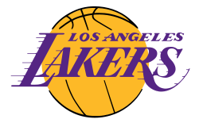

Los Angeles Lakers

Los Angeles Lakers so ameriška profesionalna košarkarska ekipa s sedežem v Los Angelesu. Lakers tekmujejo v Nacionalni košarkarski zvezi (NBA) kot član zahodne konference pacifiške divizije lige. Lakers igrajo svoje domače tekme v Crypto.com Arena, areni, ki si jo delijo z NBA Los Angeles Clippers, Los Angeles Sparks iz Ženske nacionalne košarkarske zveze in Los Angeles Kings iz Nacionalne hokejske lige. Lakers so ena najuspešnejših ekip v zgodovini lige NBA in so osvojili 17 naslovov prvaka lige NBA, kar je največkrat izenačeno z ekipo Boston Celtics v zgodovini lige NBA. Franšiza se je začela z nakupom leta 1947 razpuščene ekipe Detroit Gems iz Nacionalne košarkarske lige (NBL). Nova ekipa je začela igrati v Minneapolisu v Minnesoti in se imenovala Minneapolis Lakers. Sprva član NBL, Lakersi so osvojili prvenstvo NBL leta 1948, preden so se pridružili konkurenčni Ameriški košarkarski zvezi, kjer so osvojili pet od naslednjih šestih prvenstev, pod vodstvom zvezdnika Georgea Mikana. Po finančnih težavah v poznih petdesetih letih prejšnjega stoletja po Mikanovi upokojitvi so se pred sezono 1960–61 preselili v Los Angeles. Pod vodstvom članov dvorane slavnih Elgina Baylorja in Jerryja Westa se je Los Angeles šestkrat v šestdesetih letih prejšnjega stoletja uvrstil v finale lige NBA, vendar je vsako serijo izgubil proti Celticsom, s čimer se je začelo njihovo dolgoletno rivalstvo. Leta 1968 so Lakersi pridobili štirikratnega najkoristnejšega igralca lige NBA (MVP) Wilta Chamberlaina in osvojili svoj šesti naslov lige NBA – in prvega v Los Angelesu – leta 1972, pod vodstvom novega glavnega trenerja Billa Sharmana. Po upokojitvi Westa in Chamberlaina je ekipa zamenjala za superzvezdnika Kareema Abdul-Jabbarja, ki bi kot Lakers osvojil tri nagrade MVP.
Trenutna ekipa

Po prekinitvi sezone NBA 2019–20 so bili Lakersi ena od 22 ekip, povabljenih v NBA Bubble za sodelovanje na zadnjih osmih tekmah redne sezone. Lakersi so redno sezono končali z izidom 52-19 in se prvič po letu 2013 uvrstili v končnico ter prvič po letu 2010 kot prvi nosilci. Prvič po letu 2010 so napredovali v finale lige NBA. Premagali so Miami Heat s 4–2 in zmagali v finalu lige NBA 2020, James pa je bil že četrtič v karieri imenovan za MVP finala [281]. Zmaga je Los Angelesu prinesla 17. naslov prvaka v zgodovini franšize, s čimer so se Boston Celtics izenačili z največ vseh časov. Lastnica Primary Lakers Jeanie Buss, ki je ekipo prevzela leta 2017, bi prav tako postala prva lastnica nadzornega moštva lige NBA, ki je zmagala v finalu lige NBA. Izven sezone 2021 so Lakersi pobrali številne veterane lige NBA, med katerimi je bil najbolj opazen Russell Westbrook, ki so ga kupili v uspešni trgovini z Washington Wizards. Kyle Kuzma, zadnji igralec, ki je ostal iz obdobja mladega jedra Lakersov, je bil zamenjan skupaj z drugimi. Drugi veterani, ki so bili izbrani med sezono, so bili Carmelo Anthony, DeAndre Jordan in povratni igralci Wayne Ellington, Trevor Ariza, Dwight Howard in Rajon Rondo. Alex Caruso je zapustil Lakerse in podpisal pogodbo s Chicago Bulls, veteranski glas slačilnice Jared Dudley pa se je upokojil.